Getting Started
Launching the app, role selection, and window controls
What is CNC Interactive Learning?
A desktop application built with Tauri and Vue 3 for teaching CNC machining through interactive exercises.
| Activity Type | What You Do |
|---|---|
| CNC Practice | Enter X/Z coordinates on a diagram, then write the matching G-Code program |
| Schematic Exploration | Explore a technical diagram by clicking on annotated hotspots |
The Login Screen
When the app starts, you see the role selection screen. Choose your role to continue.
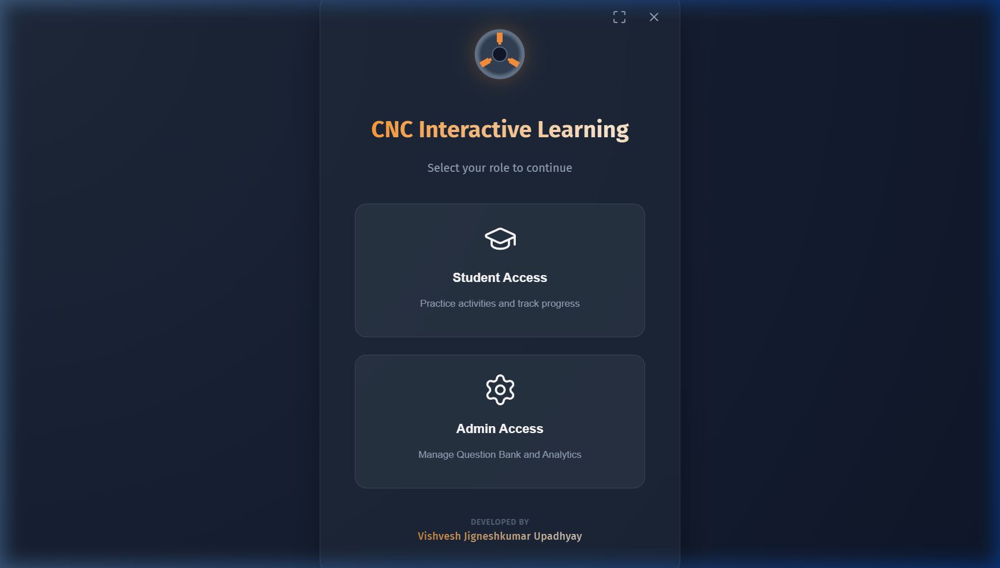
Window Controls
| Button | Action | Shortcut |
|---|---|---|
| ⛶ Expand | Enter / exit fullscreen | F11 |
| ✕ Close | Exit the application | — |
Roles
| Role | Purpose |
|---|---|
| 🎓 Student | Access the learning dashboard, practice activities, track progress |
| ⚙️ Admin | Manage questions, create activities, build courses, review reports |
Admin Access is only visible when enabled. In production, set VITE_ENABLE_ADMIN=true.
Student Dashboard
Your personalised course view with chapter and activity timelines
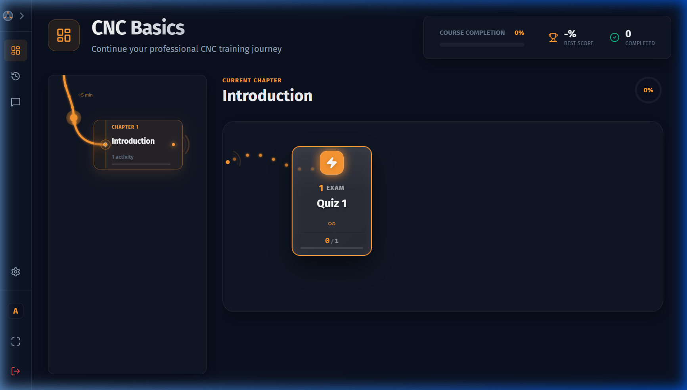
Header Panel
| Element | Description |
|---|---|
| Course Name | The active course loaded by your admin |
| Course Completion | A percentage bar showing your overall progress |
| Best Score | Your highest ever score across all attempts |
| Completed | How many activities you've fully finished |
Chapter Timeline (Left Sidebar)
The vertical timeline on the left lists every chapter in the course. Click any chapter to see its activities on the right.
| Status | Meaning |
|---|---|
| 🔒 Locked | Complete the previous chapter first |
| ○ In Progress | At least one activity started |
| ✓ Completed | All activities finished |
Activity Timeline (Right Panel)
Each activity appears as a node in a horizontal timeline. The recommended next activity is highlighted with a pulse effect.
| Activity Icon | ⚙️ (CNC), 🖼️ (Schematic), or 📖 (Text Lesson) |
|---|---|
| Badge | Meaning |
| Completed | Activity finished with a score recorded |
| In Progress | Started but not yet submitted |
| Pending | Not started yet |
If you close the app mid-activity, your work is auto-saved. The node will show "Resume" when you return.
Text Lesson Activity
Reading rich educational content and recording offline progress
The Text Lesson Activity allows you to read rich educational content provided by your instructor before attempting practical CNC assignments.
Reading the Lesson
When you launch a Text Lesson, the reading interface provides a distraction-free environment:
- Rich Formatting: Lessons may contain formatted text, bulleted lists, code examples, and embedded diagrams.
- Images: Any embedded images or diagrams can be clicked to view them in fullscreen.
Marking as Complete
To track your progress and unlock the next activities in the curriculum, you must explicitly mark your lessons as read.
- Read through the lesson content.
- In the top-right corner of the header, click the Mark as Read & Continue (✓) button.
- Once clicked, the button changes to "Return to Dashboard" and your progress is securely saved to your local profile.
- On the dashboard timeline, the lesson node will now display a green Completed badge.
CNC Practice Activity
Two-phase exercise: coordinate input → G-Code programming
Phase 1 — Coordinate Input
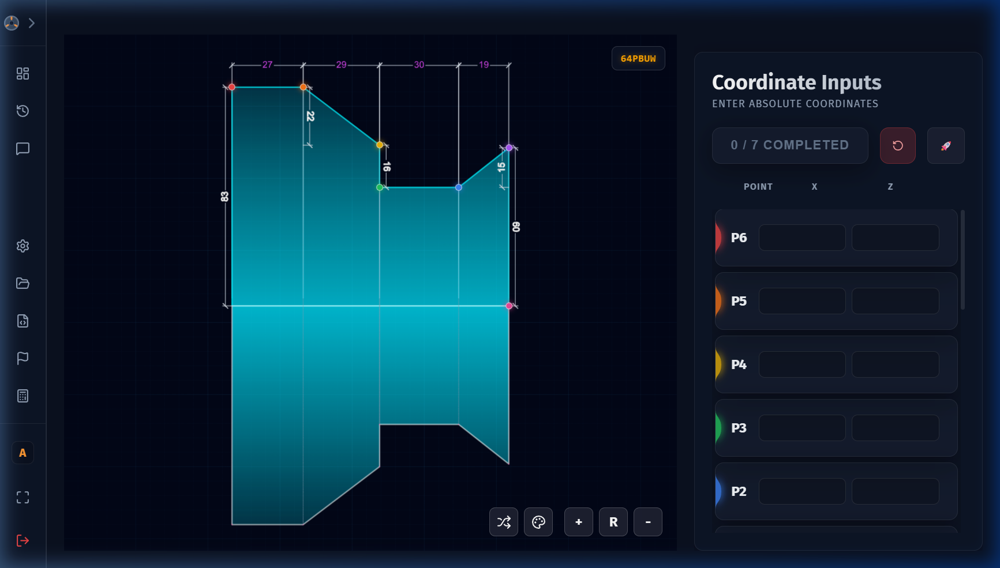
- Study the SVG diagram — each labelled point (P1, P2, P3 …) represents a machining position.
- Enter the X and Z values for each point in the table on the right.
- All fields must be filled. Empty fields trigger a shake animation.
- Click Check / Submit to validate. Correct entries go green ✓, incorrect ones show the right answer.
- Your Phase 1 Score is displayed, and the app transitions to Phase 2.
Phase 2 — G-Code Programming
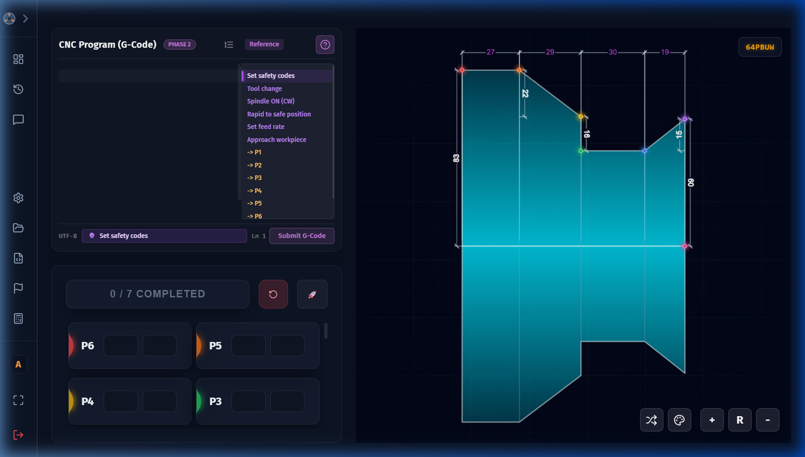
The Monaco code editor (same engine as VS Code) provides syntax highlighting, line numbers, and auto-indentation for G-Code.
- Use the editor to write your CNC G-Code program using the coordinates from Phase 1.
- Click Run / Simulate to submit.
- The system validates your code through multiple passes:
| Validation Pass | What's Checked |
|---|---|
| Syntax | G-Code command format (regex-based) |
| Coordinates | X and Z within valid machining limits |
| Feed Rates | F values in valid ranges |
| Spindle Speeds | S values in valid ranges |
| Tool Numbers | T values must be valid |
Scoring
If validation passes, your code is compared line-by-line against the expected solution. The Final Score is a weighted combination of Phase 1 + Phase 2 scores. A celebration animation plays on completion! 🎉
Activity Types
| Type | How It Works |
|---|---|
| Finite | Fixed question pool — complete all to finish |
| Infinite | Random questions from pool — complete when best score ≥ 60% |
Re-attempting an activity can only improve your score record. Your best score is always preserved.
Schematic Exploration
Explore annotated diagrams by clicking interactive hotspots
The 3-Panel Layout
| Panel | What It Shows |
|---|---|
| SVG Viewer | The diagram with coloured hotspot circles overlaid |
| Side Panel | Label + detailed description of the selected hotspot |
| Hotspot Grid | Colour-coded cards tracking visited vs unvisited hotspots |
How to Explore
- Click any coloured hotspot circle on the main diagram.
- The Side Panel updates to show its label and detailed description.
- The bottom grid tracks your progress — visited hotspots light up.
- Continue until all hotspots are visited.
- Click Finish Exploration to complete the activity (awards 100% score).
Progress is auto-saved. If you close and reopen, previously visited hotspots remain marked.
Attempt History
Review past submissions, scores, and detailed attempt snapshots
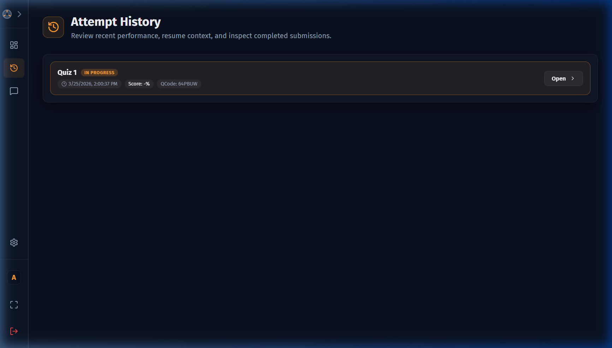
History List
Each row shows one attempt with:
| Field | Description |
|---|---|
| Activity Name | Which activity was attempted |
| Status | Completed or In Progress |
| Date & Time | When it was submitted or last saved |
| Score | Total score as a percentage |
| Open | Opens the full detail view |
History Detail
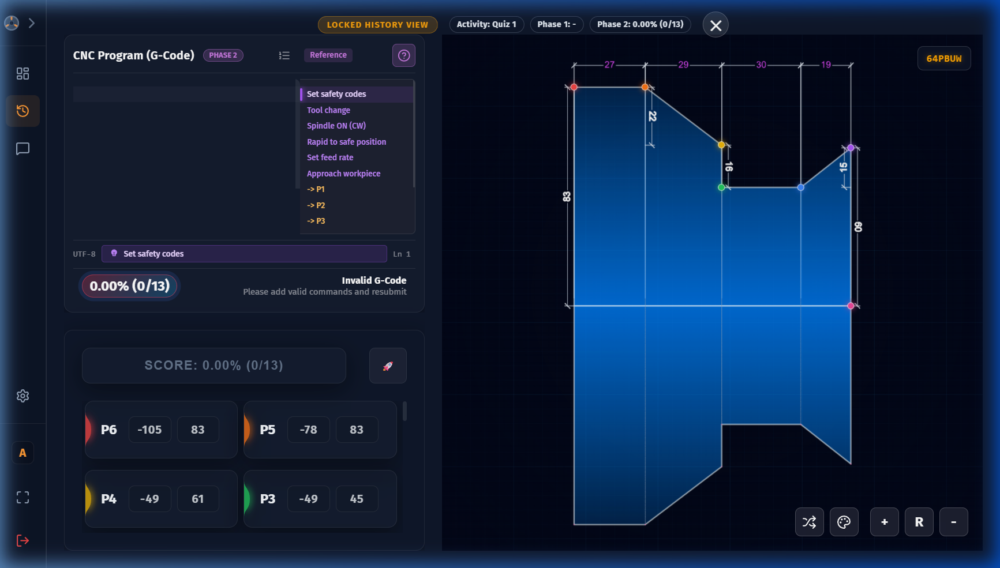
The detail view shows a locked, read-only snapshot: coordinate entries, G-Code submitted, and final scores. To re-attempt, return to the Dashboard and start a new attempt.
Course Structure
Build and organise your curriculum: Course → Chapter → Activity
All admin features require logging in as Admin. In production, set VITE_ENABLE_ADMIN=true.
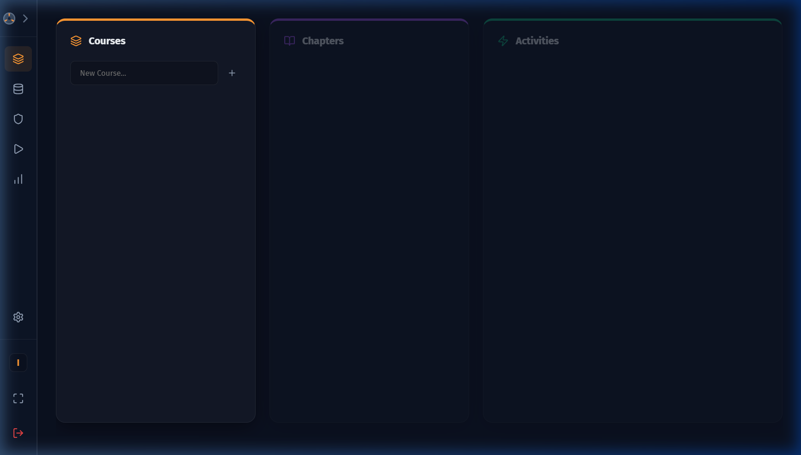
Creating a Course
- Type a course name in the Courses input field.
- Click the + button to create it.
- Click the new course to select it.
Adding Chapters
- With a course selected, type a chapter name.
- Click + to add. Use ↑/↓ arrows to reorder.
Linking Activities
Select a chapter, then browse the Lessons (schematic) and Exams (CNC) pools on the right. Click + to add any activity to the chapter. Use ↑/↓ to reorder and 🗑️ to remove.
Deleting a course or chapter permanently removes it and all its links.
QBank Manager
Import, browse, flag, and manage the question bank
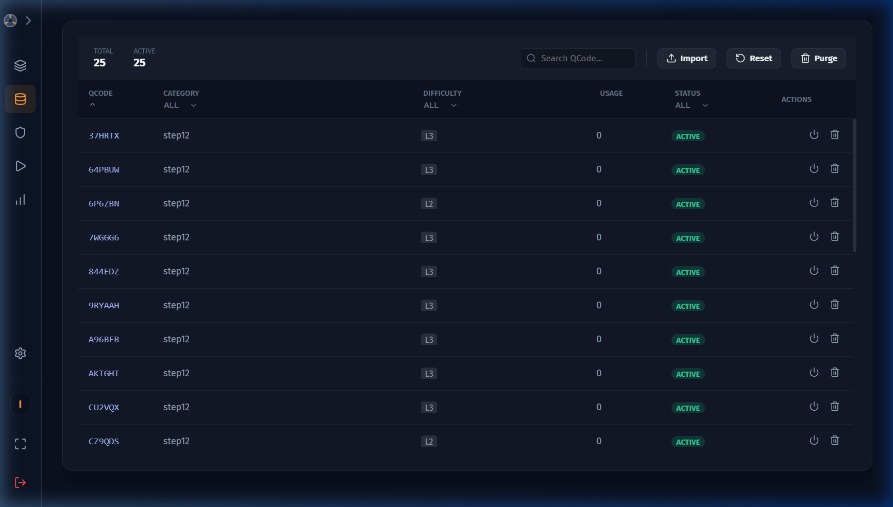
Importing Questions
- Click the Import button.
- Select a
BankExportJSON file. - Questions are validated, imported, and grouped by category and difficulty (1-5).
Browsing & Flagging
Questions are listed with their QCode, Category, Difficulty Level (colour-coded 1🟢 → 5🔴), and Usage Count. Use the search bar to filter. Click Flag to mark a question for review.
Test Generator
Create CNC practice activities from the question bank
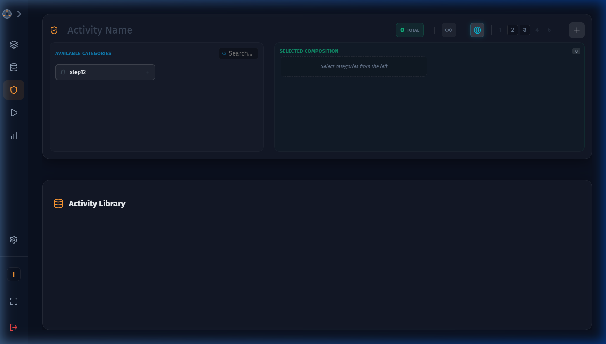
Creating an Activity
- Enter an Activity Name in the header.
- Toggle Finite / Infinite mode (∞ button).
- Choose difficulty mode: Global (uniform) or Custom (per-category via 🌐 button).
- Select categories from the left panel and configure levels/counts.
- Click ⚡ Generate to create the activity.
Activity Type Details
| Mode | Behaviour |
|---|---|
| ∞ Infinite | Students get random questions; complete when best score ≥60% |
| Finite | Fixed pool of questions; all must be completed |
| 🌐 Global | Same difficulty levels applied to all categories |
| 🎯 Custom | Different difficulty levels per category |
Asset Pool (Schematics & Lessons)
Upload diagram images, hotspot JSON, and create text lessons
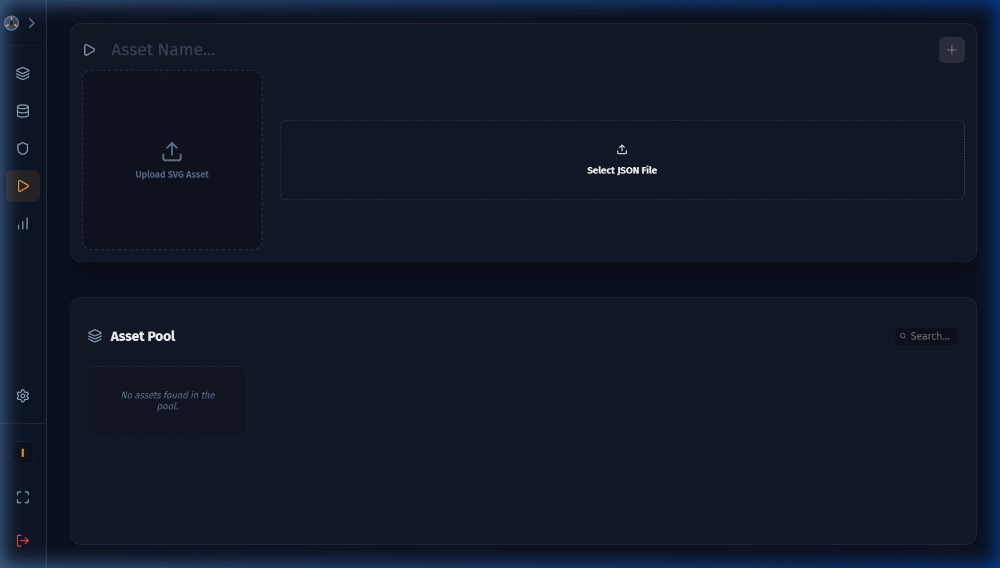
Use the toggle switch at the top of the interface to switch between Schematic Mode and Text Lesson Mode.
Creating a Text-Based Lesson
- Toggle the interface to Text Lesson Mode.
- Enter a Lesson Title.
- Use the integrated TipTap Rich Text Editor to write the lesson content.
- You can format text (Bold, Italic), create lists, and structure the document with Headings and Blockquotes.
- Images: You can drag and drop images directly into the editor. The application automatically converts and saves these images securely to the local offline database for student viewing.
- Click Save Lesson to add it to the asset pool.
Creating a Schematic
- Enter a Schematic Name.
- Click Upload Image — select a PNG, JPG, or SVG file.
- Click Upload JSON — select the hotspot definition file.
- Click Create Schematic to save.
Hotspot JSON Format
[
{
"id": "hotspot-1",
"x": 150,
"y": 220,
"radius": 20,
"label": "Chuck Jaw",
"detailedDescription": "Holds the workpiece..."
}
]Reports
Review and resolve flagged question reports from students
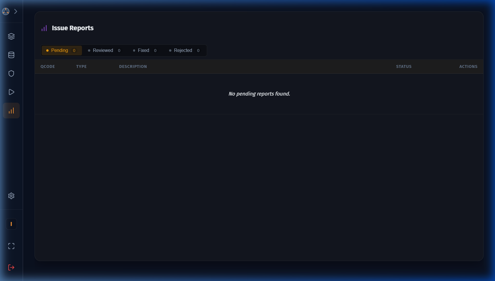
Report Statuses
| Status | Meaning |
|---|---|
| Pending | New, awaiting review |
| Reviewed | Acknowledged, not yet fixed |
| Fixed | Issue resolved in the QBank |
| Rejected | Report dismissed |
Resolving a Report
- Click View Question to preview the flagged question.
- Optionally enter a resolution note.
- Click the appropriate action: Fixed, Reviewed, or Rejected.
Glossary
Key terms used throughout the application
| Term | Definition |
|---|---|
| Activity | A single learning exercise — either CNC practice or schematic exploration |
| Chapter | A group of related activities within a course |
| Course | The full learning programme, made up of sequential chapters |
| Finite Activity | Fixed question pool — every question must be completed |
| Infinite Activity | Random questions from pool — complete when best score ≥ 60% |
| G-Code | The programming language used to control CNC machine tools |
| Hotspot | An interactive clickable point overlaid on a schematic diagram |
| QCode | Unique identifier for each question in the question bank |
| QBank | Question Bank — the central repository of all CNC questions |
| BankExport | The JSON file format used to import questions into the QBank |